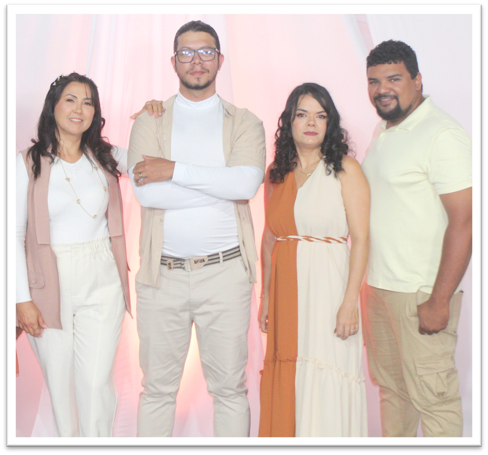
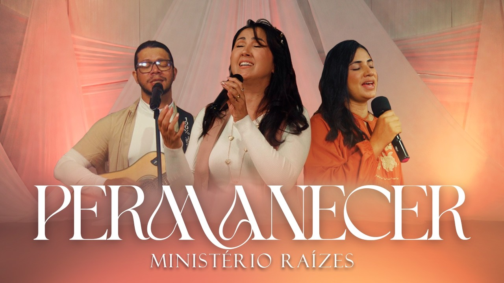

2024 · EP 1
Tudo Ele Fez Por Mim
- Glória e Majestade
- Tudo Ele Fez Por Mim
- Ele Vive
- Jeremias 29
Portfólio Artístico
Grupo de música cristã autoral · Fortaleza/CE
O Raízes é um grupo musical de Fortaleza (CE), formado em 2021, que compõe, grava e lança música cristã autoral — canções de letra simples e melodia marcante, feitas para o público cantar junto.
Desde abril de 2024, o grupo lançou três EPs com 13 faixas, 11 delas autorais, distribuídos nas principais plataformas digitais. Toda a produção foi independente e financiada com recursos próprios, sempre em parceria com profissionais da cadeia produtiva da música. Em 2026, o grupo prepara o quarto EP, Tributo, com seis canções autorais, lançado uma faixa por mês de janeiro a junho de 2027. Em seguida, o grupo prepara o quinto EP.
Nas plataformas digitais, o grupo publica como Ministério Raízes.

Quatro EPs gravados, filmados e lançados com recursos próprios do grupo.
Produção musical, mixagem, masterização e audiovisual feitos por profissionais do setor.
Mais de 14 mil inscritos e 200 mil visualizações no YouTube, além de Spotify e Apple Music.
Dados de outubro de 2026 · fonte: canal oficial no YouTube.
Da formação do grupo ao quinto EP.
O Raízes começa a se reunir em Fortaleza para compor e se apresentar ao vivo.
Estreia nas plataformas com a canção Glória e Majestade, faixa de abertura do primeiro EP.
Primeiro EP, com 4 faixas autorais e videoclipes para todas as canções.
Segundo EP, com 5 faixas, 4 delas autorais, bateria gravada em estúdio e produção executiva da Herança Music.
Terceiro EP, com 4 faixas, 3 delas autorais.
Show aberto ao público durante um campeonato de skate no bairro Conjunto Palmeiras, em Fortaleza.
O grupo se formaliza como associação sem fins lucrativos e conclui, com recursos próprios, o EP Tributo, com 6 canções.
Uma faixa nova por mês nas plataformas digitais.
Produção de um novo EP com 6 canções inéditas, em busca de apoio.
Composições do próprio grupo, exceto as faixas indicadas.

Direção artística
Músico há 27 anos, 23 deles dedicados à música cristã. Líder e diretor artístico do grupo, é o compositor da maior parte do repertório autoral, além de vocalista e tecladista principal.
Cantora há 4 anos, é a vocalista principal do grupo e divide com Jessé a condução artística das apresentações e gravações.
Integrantes
Cada lançamento envolve profissionais e empresas da cadeia produtiva da música e do audiovisual.
Ao todo, 7 profissionais e empresas parceiras já participaram das produções do grupo.
Apresentação ao ar livre, aberta ao público, durante competição esportiva no bairro Conjunto Palmeiras, em Fortaleza.
Apresentações regulares do repertório autoral para o público da cidade.
Gravação completa, mixagem e masterização das 6 faixas.
Registro audiovisual das canções para YouTube e redes sociais, com legendas.
Lançamento em espaço público de Fortaleza, aberto a todos e com intérprete de Libras.
Oficina de música e composição para jovens, compartilhando a experiência de produção independente.
Para parcerias, patrocínios, apresentações e imprensa.